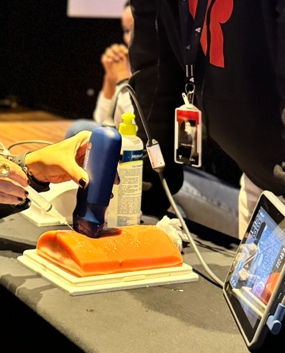

Domine o ultrassom point-of-care para tomar decisões rápidas no paciente crítico.
Uma imersão presencial de um dia para médicos que querem aprender a usar o POCUS na emergência, mesmo sem experiência prévia ou com pouca base em ultrassom.
Vagas limitadas para preservar a qualidade da experiência prática.

Não é sobre decorar imagens. É sobre transformar achados em conduta.
O Emergency POCUS é um curso presencial voltado para médicos que desejam iniciar ou fortalecer sua base no uso do ultrassom à beira-leito.
Durante a imersão, você terá contato com as principais aplicações do POCUS no atendimento ao paciente crítico, passando por avaliação pulmonar, cardíaca, vascular, hemodinâmica, protocolos de emergência e procedimentos guiados por ultrassom.
O Emergency POCUS foi pensado para médicos que atendem pacientes graves e querem desenvolver segurança no uso do ultrassom point-of-care, mesmo que estejam começando agora.
Médicos que atuam na emergência e precisam tomar decisões rápidas no paciente crítico.
Médicos que atuam em terapia intensiva e querem usar o POCUS como ferramenta de decisão à beira-leito.
Clínicos que atendem pacientes críticos e buscam mais segurança no uso do ultrassom no ambiente hospitalar.
Médicos clínicos gerais que trabalham em pronto-socorro e querem aprender a usar o ultrassom point-of-care.
Seis módulos práticos cobrindo as principais aplicações do POCUS no atendimento ao paciente crítico.
Avaliação da insuficiência respiratória, diagnósticos sindrômicos e possíveis causas de desconforto respiratório no paciente crítico.
Aquisição das principais janelas cardíacas, avaliação inicial da função cardíaca e reconhecimento de situações patológicas relevantes na emergência.
Técnicas de punção guiada e uso do ultrassom para aumentar a segurança em procedimentos à beira-leito.
A dinâmica do Emergency POCUS foi desenhada para que todos os alunos passem pelas principais estações do curso, com rodízios ao longo do dia e foco em aplicação prática.
Você não vai apenas assistir. Vai colocar as mãos no transdutor e praticar cada módulo com supervisão.
Uma imersão prática com rodízios em estações para acelerar seu aprendizado em POCUS.
O Emergency POCUS apresenta as principais aplicações do ultrassom à beira-leito na emergência, de forma integrada.
Pensado para médicos sem experiência prévia ou com pouca base em POCUS que querem começar com segurança.
Conteúdo direcionado para situações em que o ultrassom pode acelerar a decisão clínica na emergência.
Você passa por diferentes estações práticas ao longo do dia, com rodízio entre os grupos.
A proposta é conectar imagem, raciocínio clínico e conduta. O que você aprende, você usa no próximo plantão.
Ao final da imersão, os participantes recebem certificado de conclusão do curso.
Dois cursos do mesmo grupo, com focos distintos. Entenda qual é o mais adequado para você agora.
Uma imersão presencial para médicos que querem usar o ultrassom point-of-care como ferramenta de decisão no paciente crítico.
Turma presencial com vagas limitadas.
Aprenda a usar o POCUS como uma ferramenta prática para avaliar, interpretar e agir com mais segurança na emergência.